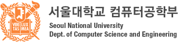
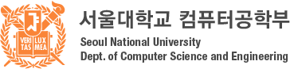
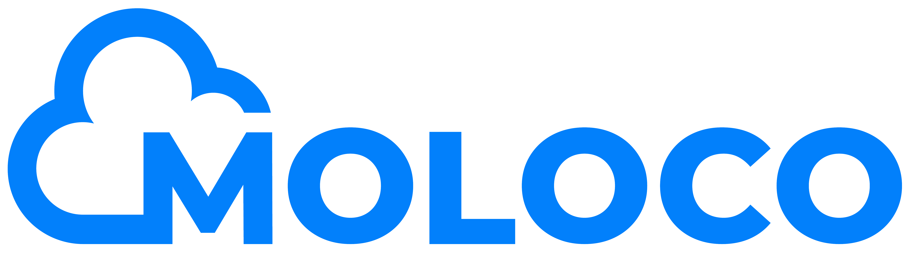
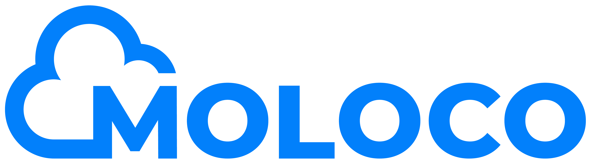

SNUPC 2024
서울대학교 프로그래밍 경시대회 2024
Sponsored by
 


 


개요
SNUPC 2024는 서울대학교 컴퓨터공학부 알고리즘 문제해결 동아리 SNUPS에서 주최하고 NAVER, 서울대학교 컴퓨터공학부, 삼성전자 소프트웨어 멤버십, FuriosaAI, Moloco, Startlink가 후원하는 컴퓨터 프로그래밍 경시대회입니다.
주어진 시간 내에 정해진 문제들을 많이 풀어내는 것으로 경쟁합니다. 주로 자료구조, 알고리즘, 수학 지식과 아이디어를 활용하여 알고리즘을 설계하고 프로그램을 작성하게 됩니다.
참가 신청
일정
- 신청 : 2024년 8월 22일 (목) ~ 9월 3일 (화)
- 대회 : 2024년 9월 8일 (일)
- Division 1: 2024년 9월 8일 (일) 13:00 ~ 17:00 (4시간)
- Division 2: 2024년 9월 8일 (일) 13:30 ~ 16:30 (3시간)
- 결과 발표 및 시상 : 2024년 9월 8일 (일) 17:00 ~
- Division 2 종료 후 Division 1 종료 전까지 Division 2에 대한 풀이 세션 및 ICPC 소개 등이 진행됩니다.
장소
- Division 1: 서울대학교 302동 311-1호 (소프트웨어실습실)
- Division 2: 서울대학교 302동 208호
분야
- Division 2, Division 1 두 개의 분야로 나뉘어 대회가 진행됩니다.
- 참가자는 두 분야 중 하나의 분야를 골라 참가할 수 있습니다.
Division 2
- solved.ac 기준 브론즈 ~ 플래티넘 난이도의 문제가 출제됩니다.
- 기초 수준의 알고리즘 지식을 갖고 있으며, 프로그래밍 대회가 익숙하지 않은 사람들을 위한 대회입니다.
- "컴퓨터의 개념 및 실습"을 수강했거나 프로그래밍 경험이 있으신 분은 누구나 Division 2에 도전해 볼 수 있습니다.
- Division 2 참가자 분들은 Codeforces Max Rating이 2100 미만이어야 하며, ICPC Seoul Regional 본선에 진출한 적이 없어야 합니다.
Division 1
- solved.ac 기준 실버 ~ 다이아몬드 난이도의 문제가 출제됩니다.
- 충분한 알고리즘 지식과 온/오프라인 프로그래밍 대회 경험을 갖춘 사람들을 위한 대회입니다.
- 온라인 대회 플랫폼의 Division 1 대회 참가 자격이 있거나 그에 근접한 사람(Codeforces의 경우 Max Rating 2100 이상)에게 권장합니다.
- Division 2에 비해 더 많은 상품과 경품이 주어집니다.
출제경향
- 대회는 각 Division 8문제로 구성되며, 대체로 ICPC 서울 리저널의 문제 출제 경향을 따릅니다.
- 두 Division 모두 예년보다 쉬운 난이도로 출제될 예정입니다.
- 이전 SNUPC 문제는 여기에서 확인할 수 있습니다.
- Division 1의 처음 네 문제는 출제진이 예상하는 가장 쉬운 네 문제가 난이도 순으로 배치합니다. 나머지 문제의 난이도 순서는 무작위입니다.
- Division 2의 문제는 출제진이 예상하는 난이도 순으로 배치됩니다.
- 모든 문제는 한국어로 제공됩니다.
상품
본상 : Division 1
- 1등: M2 iPad Air 11인치
- 2~3등: LG 4K 27인치 모니터
- 4~6등: 삼성전자 갤럭시 버즈3
- 7~10등: SK하이닉스 1TB 외장 SSD
- 11~15등: 5만원 상당의 상품 (TBD)
- 16~20등: 삼성전자 초고속충전 보조배터리
본상 : Division 2
- 1등: 삼성전자 갤럭시 버즈3
- 2~4등: SK하이닉스 1TB 외장 SSD
- 5~9등: 5만원 상당의 상품 (TBD)
- 10~16등: 삼성전자 초고속충전 보조배터리
- 17~30등: 문화상품권 1만원권
규정
참가 자격
- 서울대학교 학생이면 학과와 상관없이 누구나 참가 가능합니다. 대학원생, 휴학생도 포함합니다.
- 서울대학교 학생이 아니라면 참가할 수 없습니다.
- C, C++, Java, Python 3로 페이지 하단에 제공된 샘플 문제 같은 문제들을 풀 수 있어야 합니다.
대회 진행
- 기본적으로 2024 한국 대학생 프로그래밍 경시대회의 방식을 따릅니다. 단, 개인전으로 진행합니다.
- 진행 시간: 4시간 (Division 1), 3시간 (Division 2)
- 사용 가능 언어 : C11, C++17, C++20, Java 8, Java 8 (OpenJDK), Python 3.9.5, PyPy3 (PyPy 7.3.4), Kotlin (JVM)
- ICPC 경향을 따라 언어별 추가 시간과 추가 메모리는 제공되지 않습니다. 참가자분들은 각 문제에 맞는 적절한 언어를 선택하셔야 합니다.
- 대회 플랫폼 : Baekjoon Online Judge
- 인터넷 검색 및 미리 작성한 코드 사용을 허용합니다.
- 인터넷에 있는 코드를 사용하시는 경우, 유사도 검사 시 확인을 위해 코드의 출처(인터넷 URL 등)를 주석으로 적어주시기 바랍니다.
- ChatGPT의 사용은 허용하나, 유사도 검사 시 출처 주석 미표기로 인한 불이익은 책임지지 않습니다.
- 대회 도중 외부인과의 통신이나, 타 응시자의 코드 카피가 확인될 경우 부정행위로 간주할 수 있습니다.
대회 환경
채점 서버 환경
- CPU : Intel(R) Xeon(R) CPU E5-2666 v3 @ 2.90 GHz
- RAM : 3.75 GiB
- OS : Ubuntu 16.04.7 LTS
부정행위 등의 경우
- 상품을 받을 기회를 박탈당하고, 대회 참가가 무효 처리될 수 있습니다. 정도에 따라 이후 대회 참가가 제한될 수 있습니다.
등록
- 신청해주신 분께는 개별적으로 확인 메일을 넣어드립니다.
- 참가하지 못하게 된 경우 꼭 연락해 주세요.